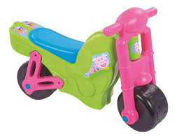
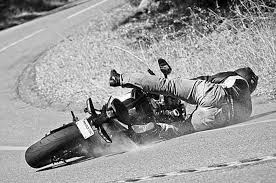
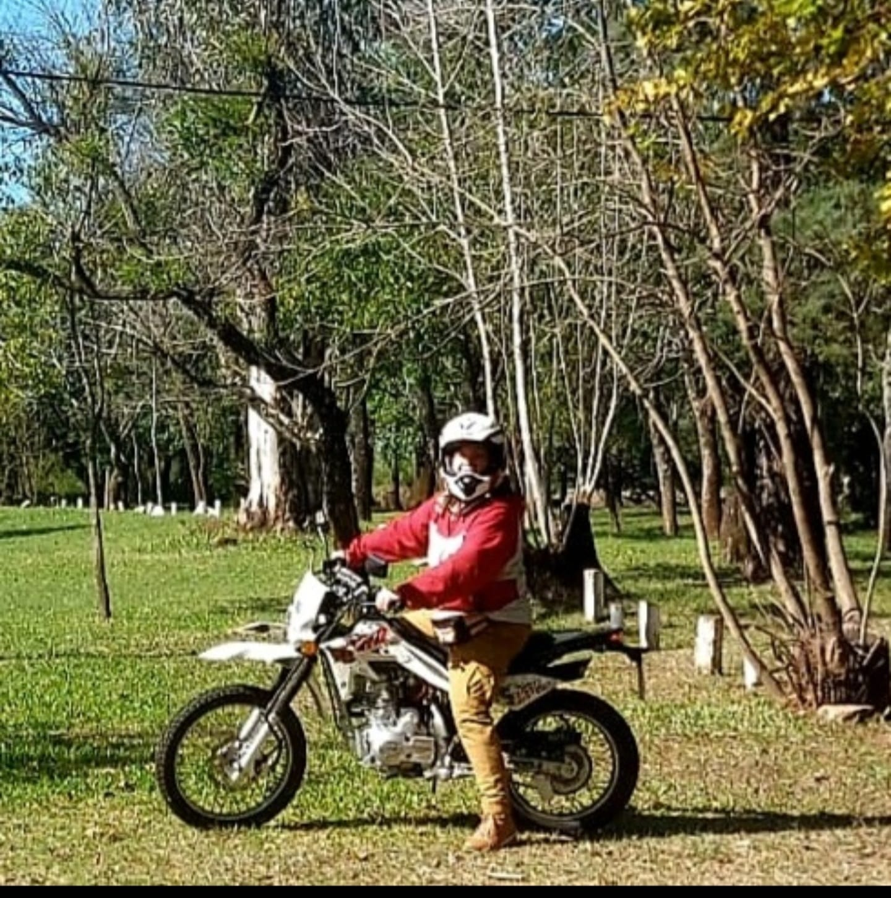
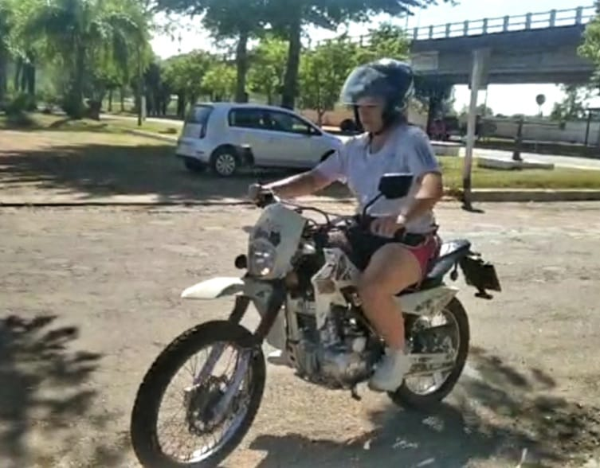
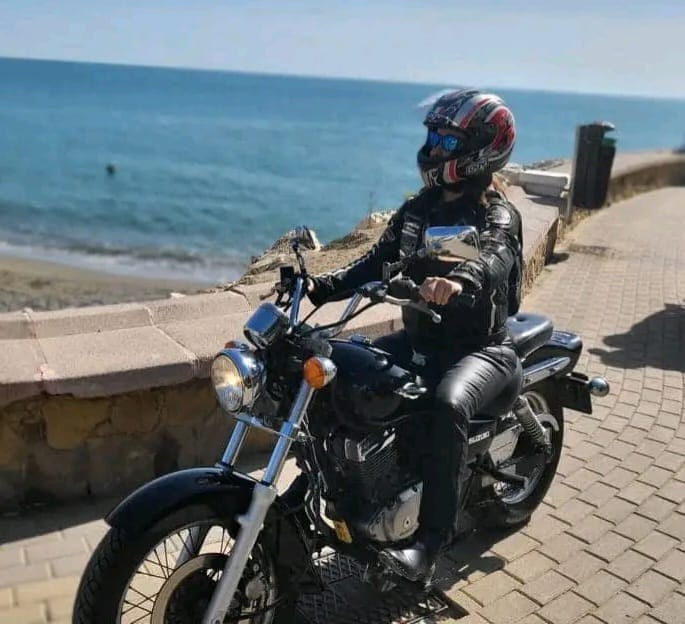

🔥Algo sobre nosotros...🔥
Los comienzos....
Nada se compara a la alegría de rodar desde que tenemos memoria, la primer moto, a fuerza de patitas, el ruido del motor se iba vocalizando a medida que avanzaba... la de plástico a los dos añitos¡
Primeros golpes y porrazos...
La era de los primeros golpes y porrazos y del "A que no te animas"...

Adolescencia y ruedas no combinan ...
No calculas tus fuerzas cuando eres muy joven, ni tus riesgos, raspones, golpes, dientes rotos y tierra en la boca¡
Al fin la paz....
Cuando llegas al ápice de tu vida usas tu moto para ir a trabajar, pasear, ir al campo etc...
Y te compras más motos pq tienes miedo a que se rompa y no tengas para ir a trabajar, pasear, ir al campo.
- Sin saltos y rampas extremas
- Pocos circuitos con lodo y tierra
- Ver los Eventos y competencias
- Aprender Mantenimiento de la moto
- Sacarse fotos con las motos
Desear un feriado para pasear en moto
Un día de sol, tranquilo sin prisa pero sin pausa...
Disfrutar de la ciudad y la naturaleza, animarse a un motoviaje,comenzar a pensar en una moto más grande y subir de cilindrada para llegar más lejos
La dimesión de la ruta y los horizontes
Y cuando te das cuenta: ya estás en otra dimensión...
Coleccionando paisajes, olores, lugares, personas que tienen los mismos intereses. Los horizontes parecen cada vez más tentadores...